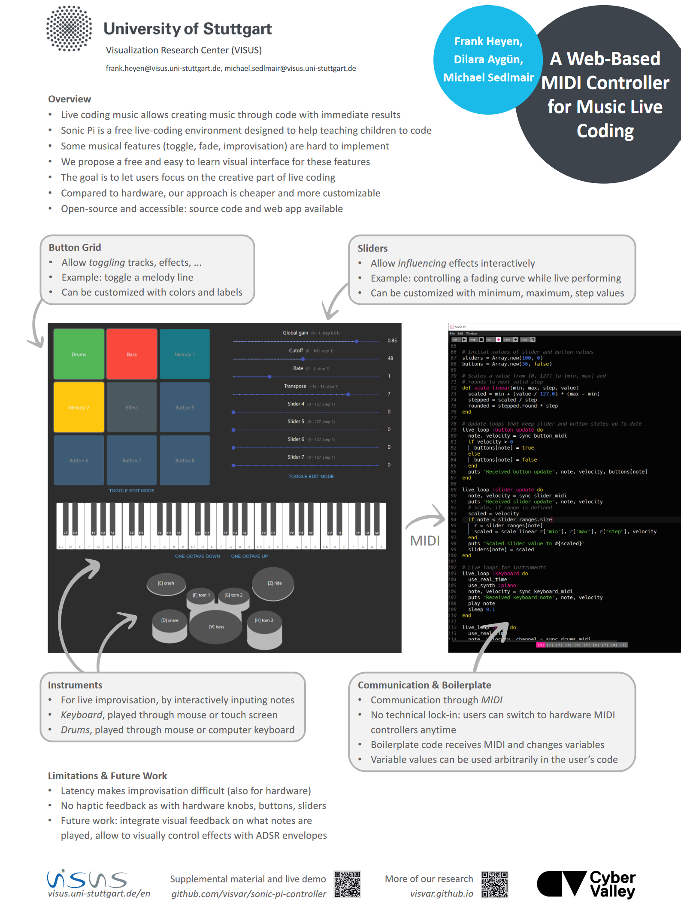

A Web-Based MIDI Controller for Music Live Coding

Venue. ISMIR-LBD (2022)
Abstract. We contribute an interactive visual frontend to live coding environments, which allows live coders and performers to influence the behavior of their code more quickly and efficiently. Users can trigger actions and change parameters via instruments, buttons, and sliders, instead of only inside the code. For instance, toggling a loop or controlling a fading effect through mouse or touch interaction on a screen is faster than editing code. While this kind of control has already been possible with hardware MIDI devices, we provide a more accessible, easy-to-use, and customizable alternative that only requires a web browser. With examples, we show how users perform live-coded music faster and more easily with our design compared to using pure code.
Acknowledgements. This work was funded by the Cyber Valley Research Fund.
Int. Conf. Music Information Retrieval Late-breaking Demo
Link to this page: